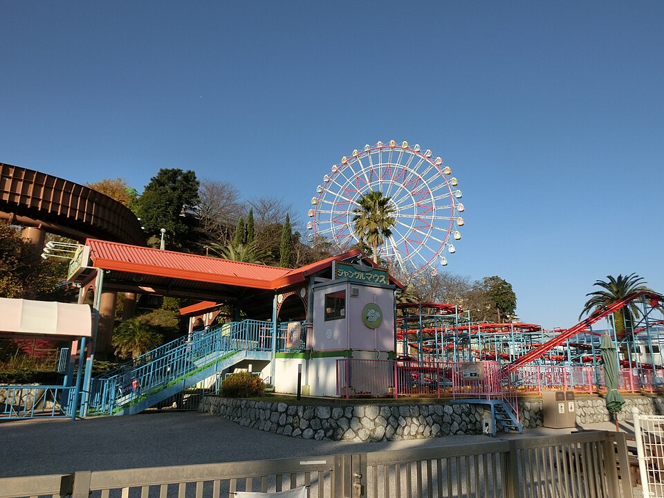
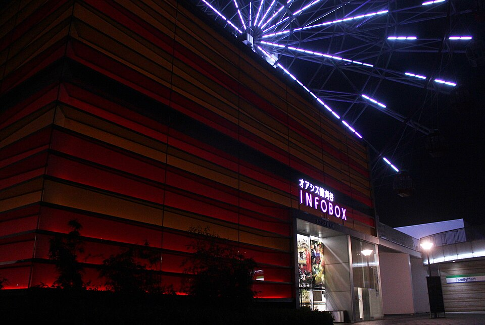
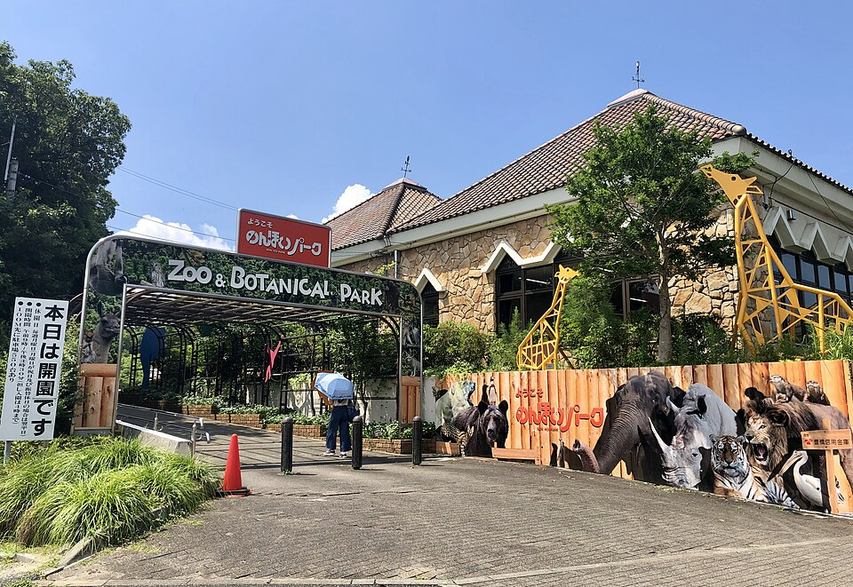
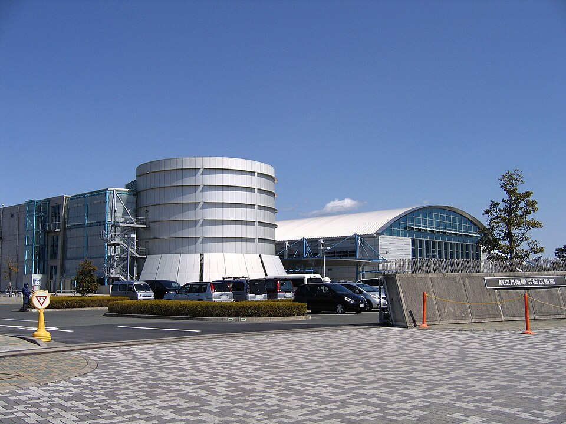
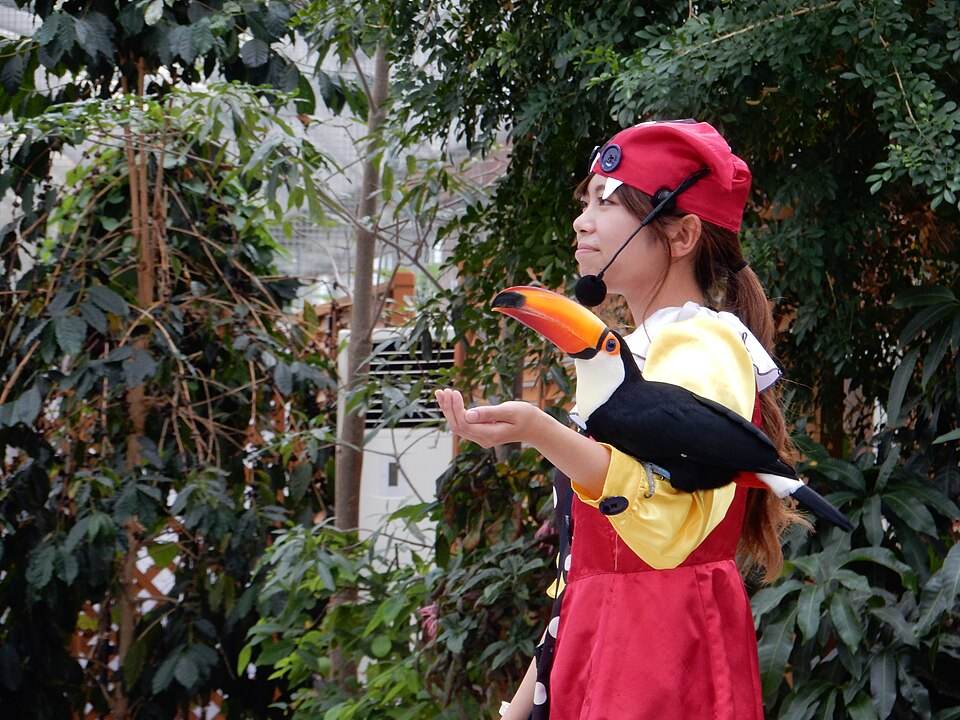
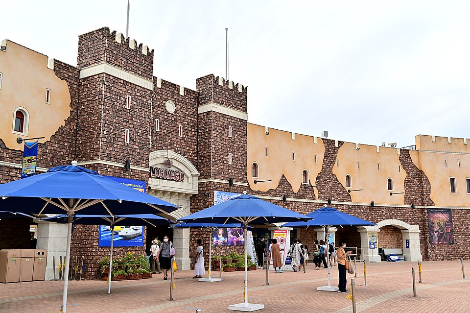
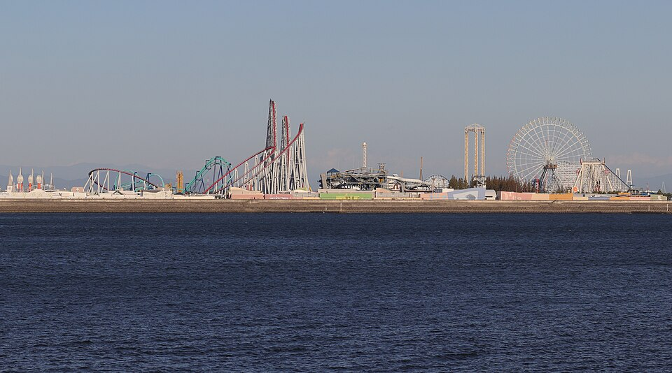
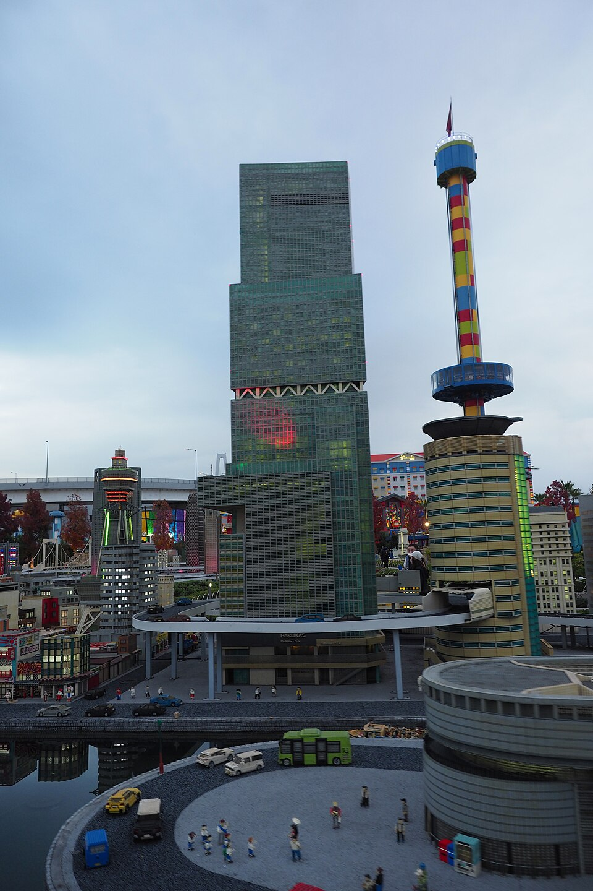

BEFORE KARIYA / 大阪側
伊賀・鈴鹿・長島・名古屋
モクモクファーム／伊賀流忍者博物館／鈴鹿サーキット／ナガシマ／レゴランド／リニア・鉄道館など。刈谷で仮眠を取った翌日に行くと戻る方向になります。

SPECIAL FEATURE / FAMILY THEME PARKS
西名阪・名阪国道から東名へ。
家族4人で寄りたいテーマパーク＆体験施設を、写真と予算で選ぶ。
ONE GOOD STOP
「いっぱい寄る」より「しっかり遊ぶ」。車中で仮眠を取るなら翌日の疲れにも配慮。各施設の入場料金は大人2人＋小学生2人の参考額です。
ROUTE FIRST
大阪→静波を西から東へ走る場合、刈谷ハイウェイオアシスは重要な分岐点です。
モクモクファーム／伊賀流忍者博物館／鈴鹿サーキット／ナガシマ／レゴランド／リニア・鉄道館など。刈谷で仮眠を取った翌日に行くと戻る方向になります。
ラグナシア／のんほいパーク／エアーパーク／浜名湖パルパル／掛川花鳥園。刈谷で入浴して仮眠する計画と相性が良い候補です。
FIVE STARS / RIGHT AT THE PA
温泉だけではもったいない。刈谷PAに隣接した岩ケ池公園は、無料の大型遊具と100円の乗り物が揃う家族向け立ち寄り先です。

無料遊具＋乗り物1回100円
ゴーカート・メリーゴーランドなど1回100円。観覧車は1人600円、4人全員が有料なら2,400円。無料の大型複合遊具もあるので、予算に合わせて選べます。
営業時間に注意：メリーゴーランドなどの一部は3〜10月の土日祝20:00まで。観覧車は22:00まで（最終21:45）。ゴーカートは18時との情報もありますが、公式掲載表は17時です。日付ごとの現地案内を確認してください。
今回の夜出発モデルで21時頃の到着なら、まず観覧車と温泉。100円遊具や公園を目的にするなら到着時間を早めるか翌朝に回しましょう。
料金・時間・ナビの詳細を見る →EDITOR'S PICKS / AFTER KARIYA
低予算、乗り物、雨天対応。家族の好みに合わせて選べます。



MORE RIDES, MORE CHOICES
アトラクション中心なら、次の大型施設を比較。公式の営業カレンダーと券種をチェックしてください。



FINAL DESTINATION
静波は牧之原市。東名吉田ICまたは相良牧之原ICから車約15分。砂浜の散策、ウェイブプールの見学、家族で泊まれる宿まで旅の計画はトップページへ。
COMPARE ALL 13
テーマパーク13施設を「刈谷より手前・直結・先」「予算5,000円以内」「雨でも楽しめる」などで絞り込み。全施設に公式サイトとナビのリンクを付けています。
写真・料金・アクセス｜13施設を比較する →